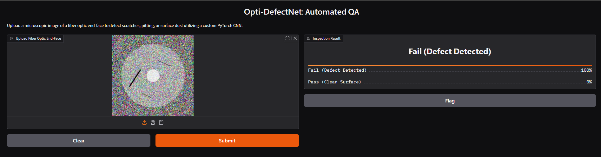
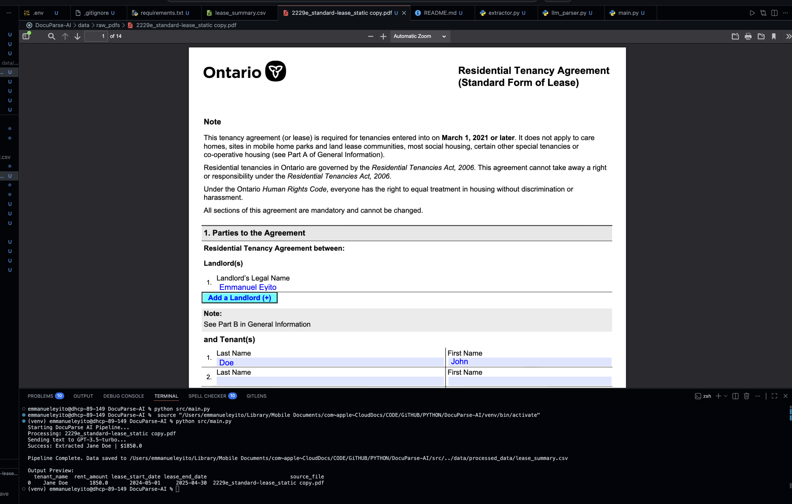

June 2026
Engineered a custom Convolutional Neural Network (CNN) from scratch utilizing PyTorch to automate the quality assurance of optical fiber end-faces. Bypassed industry data restrictions by developing a procedural synthetic data pipeline using OpenCV to generate over 10,000 augmented sensor images for model training.

Featured Software Project

A marketplace portal where Carleton university students can buy and sell their used goods. Designed to combat overconsumption and help students find affordable textbooks and clothing. Features include a robust search engine with dynamic filters, customizable user profiles, and seamless product listing pages.

A computer vision system engineered to analyze and correct optical radial distortion in real-time. Leveraging Python, OpenCV, and NumPy, this application applies Brown’s distortion model to simulate hardware defects and performs algorithmic image rectification.

An intelligent document processing pipeline built with Python and GPT. Engineered to automate manual data entry by converting unstructured PDFs into structured business intelligence.

Developed an interview practice system that provides real-time feedback on communication and presentation skills. Designed computer vision and speech processing modules with DeepFace, SpeechRecognition, and TextBlob to detect facial emotions and transcribe speech.